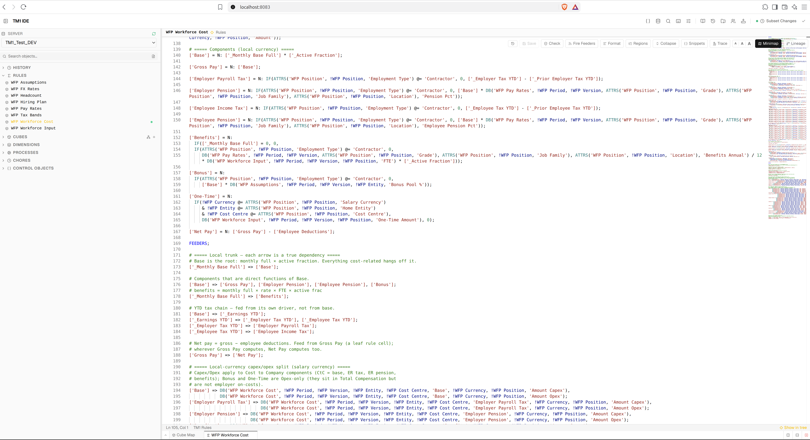
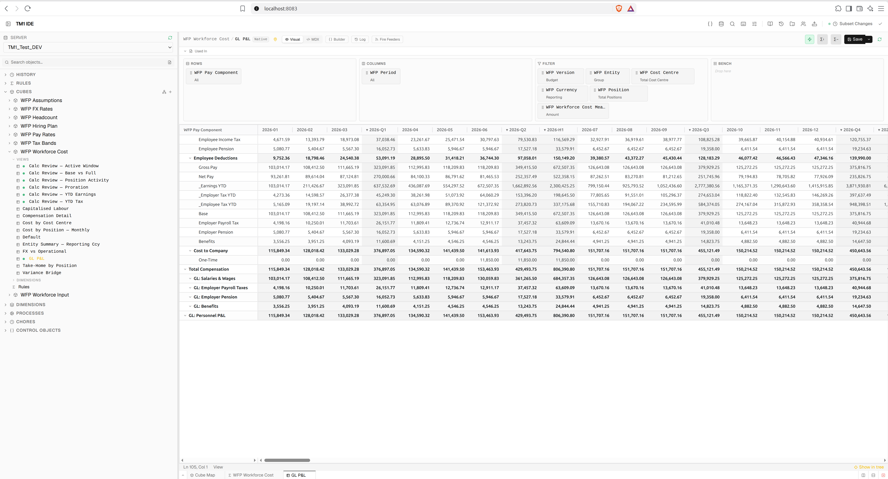

Building a TM1 model by conversation
I described a workforce planning model to an AI and let it build, inspect and change the model through conversation. It built the whole thing — dimensions, cubes, rules, processes, views. This is my second test of the approach, and what it tells me so far.
The setup
This ran on a browser-based IDE I have been building for Planning Analytics. The MCP approach does not depend on that specific IDE — it depends on the IDE having the parts that matter. For this to work you need an IDE that already has: a full TM1 REST client, a connection and authentication layer through PAW, and a change-set log.
The MCP server is a small piece inside that. A set of operations — create a dimension, build a cube, write a rule, run a process, read cells back — each one a thin wrapper over machinery the IDE already had. The AI never touches TM1. It calls an operation, the operation calls the IDE's client, the client talks to TM1.
So when I say the plumbing is quick, that is only true because the client layer was already there. Starting from nothing, you would build the client, the auth, and the change log first, and that is most of the work. The IDE is also where I checked the result — I opened every view and read every cell back through it.
To try this yourself you need that client layer. Whether it is your own IDE or a third-party one, it must give you: read and write access to the TM1 REST API under your own identity, a change set that captures every change, and a way to read cells back. The MCP server on its own is not enough.

The IDE with the model open — the cube map shows how the model is wired together
What an MCP actually is
An MCP is a way to give an AI hands on a system. Off the shelf, the official PA connector is limited, and the deeper REST API sits behind the vendor's auth and licensing. A generic connector can browse a model. It cannot build one.
The alternative is a custom MCP over your own client. Every action the AI can take — create a dimension, write a rule, run a process, read cells back — maps to a call on the TM1 REST client you already have. The AI asks, the adapter calls your client, your client talks to TM1, under your identity and your change log.
The build
I gave it a design document for a workforce planning model: headcount by position, salary cost per position, progressive employer tax, benefits, bonus accrual, one-off payments, FX translation into a reporting currency, capitalised labour, hiring and attrition, and a variance layer that compares actuals to plan.
It built the lot from the document with no manual steps. Then I added views, changed assumptions, and rebuilt parts of the model — still by conversation. That worked too.
The result was a real model: seven cubes, twenty-two dimensions, the engine cube carrying cost, currency, capitalisation and variance in one place, and a headcount bridge that reconciles opening, hires, leavers and closing headcount by month.
The design was described in plain language. The AI created dimensions and their attributes, built cubes in the agreed order, wrote rules and processes, seeded data, read cells back to check itself, and revised when I asked it to. The change-set log recorded every action as it happened.

A rules file in the editor — the engine cube carrying cost, currency, capitalisation and variance in one place
The catch
Build a model by hand and you see the numbers as you go. You write a rule, open a view, and the number is there. If it is wrong, you notice. You do not plan that check — it is just how you work.
Build it in seconds and that is gone. The model exists before you have seen a single number. To check it, you have to stop and do it on purpose.

The numbers, when you stop and look — a view of the built model with values computed
Conventions
The build did not go wrong. It improvised. An AI does not know your conventions until you tell it — the naming you use, how you want the design structured, where the complexity should live. Left to itself it builds something that works but does not match how you work.
So the pattern was build, review, inform. I told it the conventions; it revised to match; the next build followed them.
The unexpected part is that the build teaches the tool. Each model surfaces a standard or a landmine — a rule function that needs four arguments on this version, a feeder that must not target a helper cell, a conditional that must not nest past two deep. Those get codified into the lints the next build starts from. The conventions you apply become the tooling the next model inherits.
Naming — how dimensions and elements should be named, and why.
Design — where the complexity should sit, how cubes should be structured.
House style — the conventions the model should follow, given once, then followed.
Where the time went
Building this by hand would take weeks. Through the MCP it took days. Both halves got faster — but checking is now half the job, and it is still manual. A person reads each number and confirms it is right.
The fix is not to slow the build down. It is to automate the checking. Write the expected results down once — this total equals that total, this pool clears to zero. Then have the tools reject any build that breaks one.
TM1's rule checker tells you a rule is written correctly. It does not tell you it produces the right number — and a fast build makes that gap visible. The rules pass every check and still return the wrong figure; only reading the numbers back shows it.
That is regression testing for a TM1 model, which has never been standard practice here. The judgement stays with the person. The checking runs every time.
What's next
A second test, and an encouraging one. I am still learning how best to use this technology — what to hand the AI, how to describe a design so it builds well, where to apply the judgement. But the initial results are impressive, and they point somewhere worth pursuing.
This build opens a lot of questions about the path forward — not just for the model itself, but for the whole way AI could be used to build and manage TM1 models, and the consulting practice around it. What does a build look like when an AI does the construction and a person does the deciding? How much of the checking can be handed to the machine? How do you govern an agent that can write to a model? Those are the questions I am working through next.
This experiment deliberately focuses on the model-building side of the problem. There is a much bigger set of questions around security and governance — what an AI agent should be allowed to read, whose permissions apply, what it should be allowed to change, and how every change is reviewed. Those are worth treating separately.
Appendix — Technical spec
Architecture
AI agent → MCP server → TM1 client → TM1 REST API. The AI never touches TM1 directly.
| Layer | Role |
|---|---|
| MCP server | ~60 operations over the MCP protocol; one per build action |
| TM1 client | REST client; all calls go through it, under your identity |
| Auth | PAW session, direct connection, or OAuth per environment |
| Change log | SQLite; every write recorded, linked to its change set |
Design pillars
| Pillar | Rule |
|---|---|
| One write path | AI and IDE write through the same client and log; no ungoverned route |
| Change-set gate | No open change set, no write; the whole build is one attributable unit |
| One grain | Engine cube holds cost, currency, capex, variance at position × period |
| Verify, then trust | Expected results run on every close; checked against "right", not just syntax |
| Enforced conventions | Fixed dim order, measure dim last, TI naming — tools refuse non-conformant builds |
Write gate
| Operation | Behaviour |
|---|---|
| Metadata write | Requires an open change set; refused otherwise |
| Change capture | object, action, before/after, timestamp, session |
| Review | Everything appears in the IDE's change-set list |
Validation
| Check | When |
|---|---|
| Rules/process lint | Before write — arg counts, v11 landmines, section structure |
| TM1 CheckRules | Before rules are saved |
| Expected results | On every change-set close |
Scope
| Does | Does not |
|---|---|
| Read model structure and data | Deploy — packaging and deployment stay human steps |
| Build dimensions, cubes, rules, processes, views | Fine-grained permissions — access is gated by change set, not per action |
| Run processes, read cells back, verify | Authenticate as a specific user — connects as a service identity |
Evolving; second test. Security is the open question — service identity, no per-action permissions. Separate subject. The TM1 IDE (falconbi) is in development and not yet committed to GitHub.